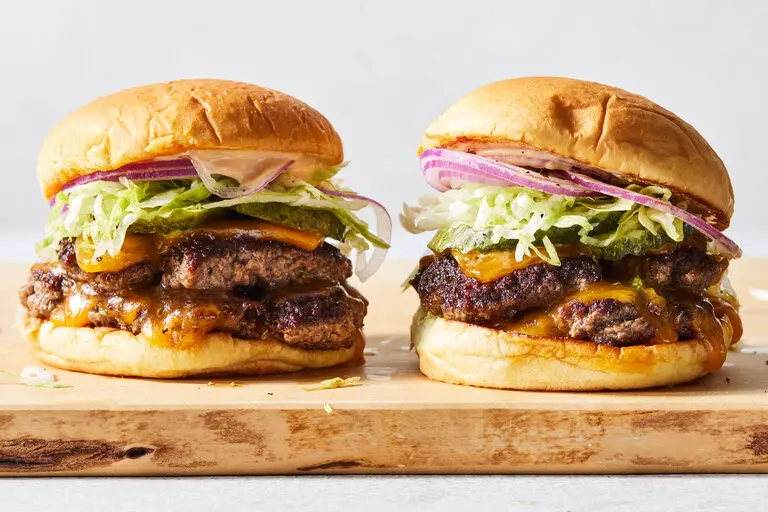

Smash Burgers

Description
Pressed onto a sizzling hot griddle or skillet, smash burgers are easy to make and loaded with flavor
Ingredients
- 1½ pounds ground beef
- 3/4 cup mayonnaise
- 1/4 cup ketchup
- 2 tablespoons sweet relish
- 1 tablespoon yellow mustard
- 1/2 teaspoon white vinegar
- 4 hamburger buns
- 2 teaspoons vegetable oil, plus more as needed
- Salt and pepper
- 8 slices Cheddar cheese
- Pickle slices, shredded iceberg lettuce and thinly sliced red onion, for serving
Steps
- Cut eight (5-inch) square pieces of parchment paper and set aside.
- Divide the ground beef into 8 equal balls. Place on a parchment paper-lined baking sheet. Cover and refrigerate until ready to use (preferably for at least 30 minutes and up to overnight).
- In a medium bowl, mix together ½ cup mayonnaise with the ketchup, relish, mustard and vinegar. Refrigerate sauce until ready to use.
- Heat a large cast-iron skillet or griddle over medium-high. Spread about 1½ teaspoons mayonnaise onto the insides of each of the buns and toast the insides of the buns until golden, about 2 minutes. Set aside.
- Heat 1 teaspoon of oil in the skillet. Add 2 of the balls of meat and place a square of parchment over each ball. Using a burger press or large metal spatula, smash the burgers directly onto the skillet until about ¼-inch thick. Remove and discard the pieces of parchment and season the burgers with salt and pepper.
- Cook the burgers, without pressing or fussing with them, until a nice crust has formed, about 2 minutes, then flip and season with more salt and pepper. Add a slice of cheese to the top of each burger and cook until the cheese has melted, about 2 minutes more. Stack the burgers on top of one another and place inside a bun. Add the reserved sauce to the inside of the bun and top the burger with pickles, lettuce and red onion. Top with the top of the bun. Repeat with the remaining ingredients to form 4 burgers.